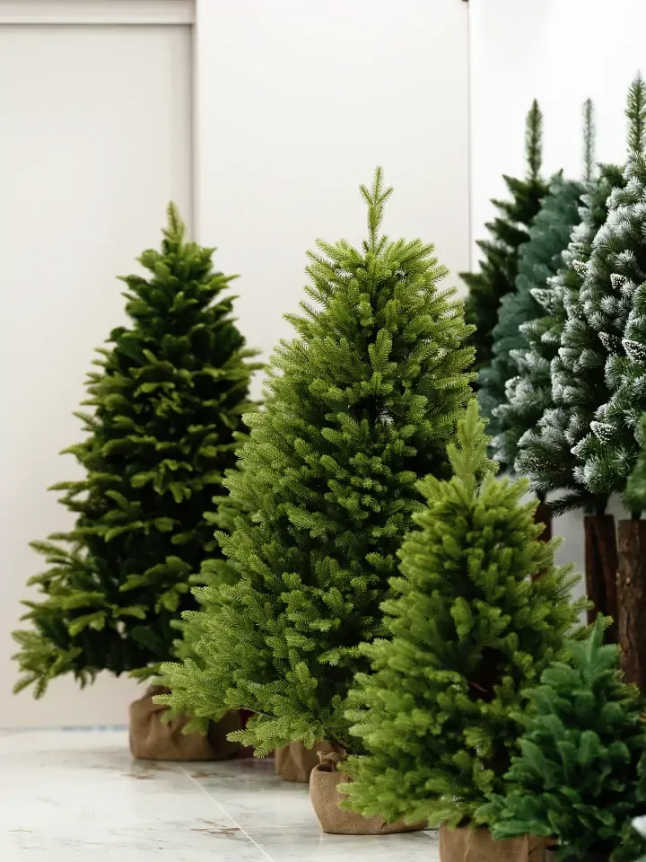
Wszystkie modele w siedzibie firmy
W Koziegłowach prezentujemy całą kolekcję. Na miejscu ocenisz strukturę igliwia i wykonanie, a zamówienie omówisz z doradcą.
Pn-pt 8:00-16:00
+48 535 222 069
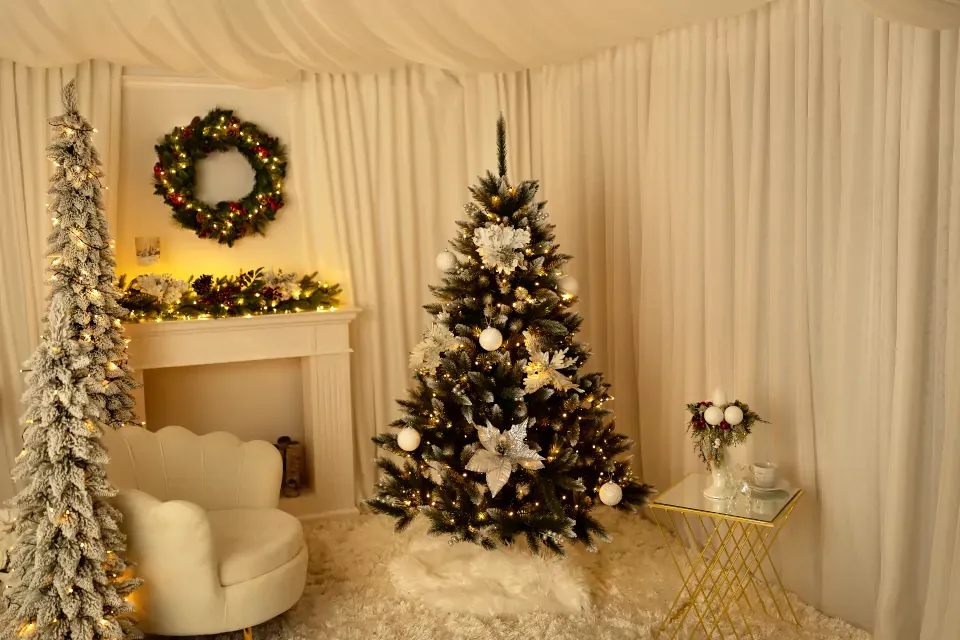
Producent sztucznych choinek z Koziegłów
Od ponad 20 lat robimy sztuczne choinki, wianki i girlandy, które wyglądają jak drzewka z lasu i służą przez wiele sezonów. Sprzedajemy w sklepie internetowym i hurtowo, w Polsce i za granicą.
Od smukłych drzewek do mniejszych mieszkań po pełne, okazałe choinki do salonu. Modele budżetowe i premium, każdy z tą samą dbałością o wykonanie.
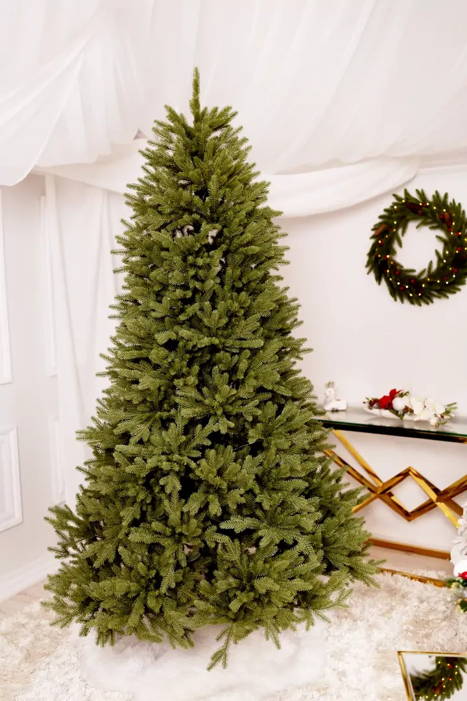
Premium 100% PENajbardziej realistyczne igliwie, gałązki w całości z polietylenu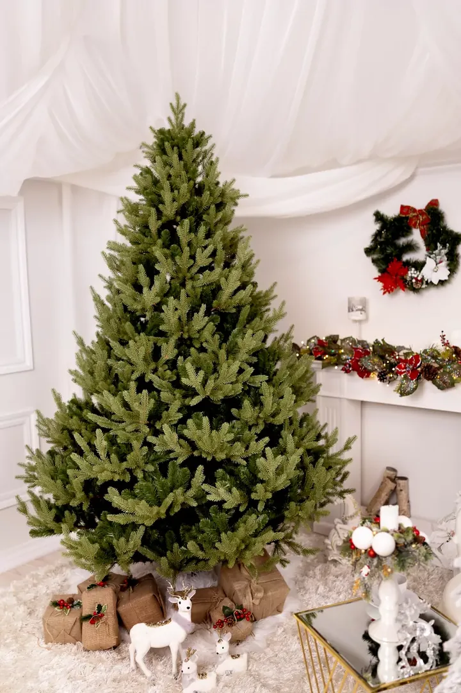
Premium PE + PVCFront gałązek z PE, przy pniu puszyste tipsy PVC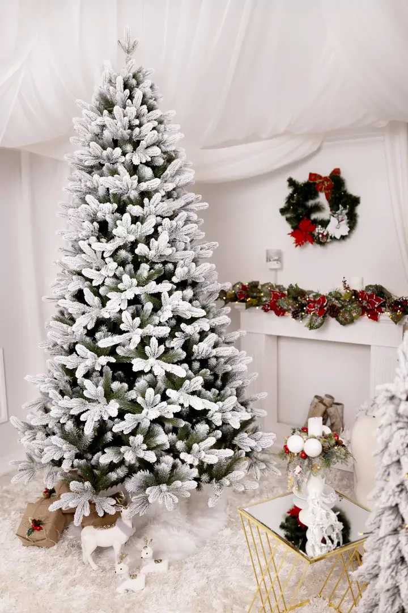
Choinki ośnieżoneOd delikatnie oszronionych po mocno ośnieżone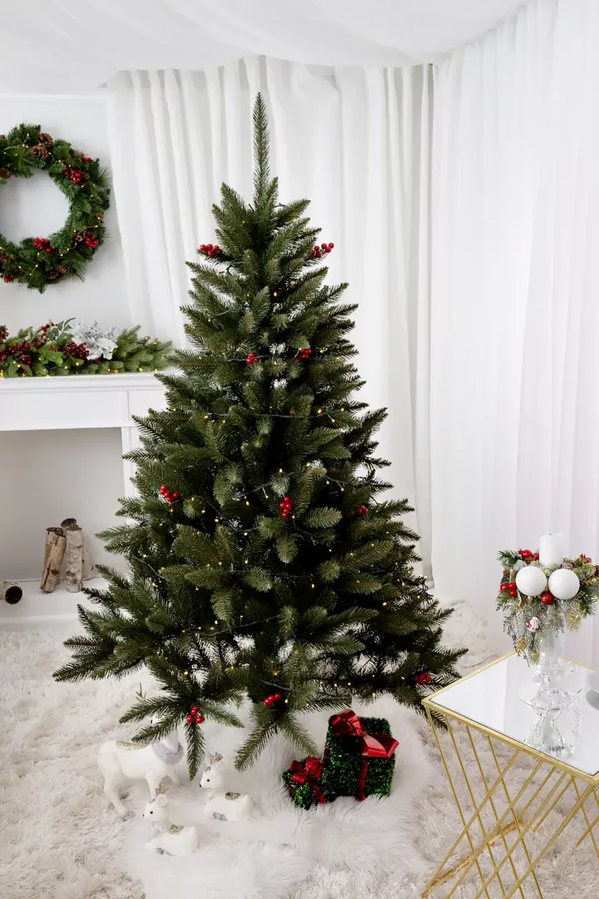
Z polskiej folii PVCTrwałe i ekonomiczne, folia polskiej produkcji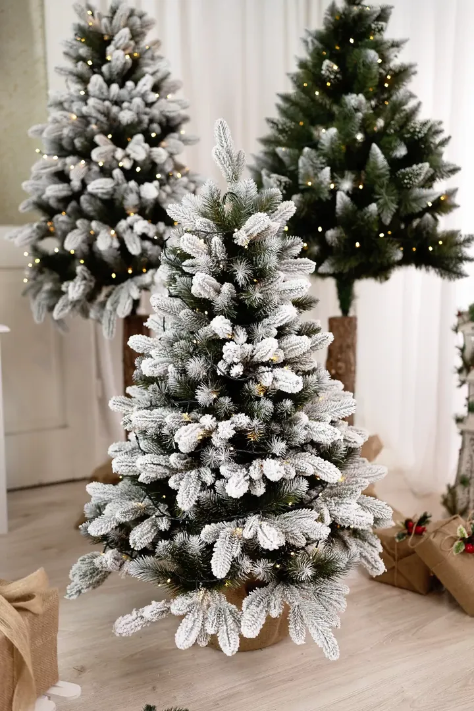
Choinki w donicyGęste drzewka hybrydowe PE i PVC w przystępnej cenie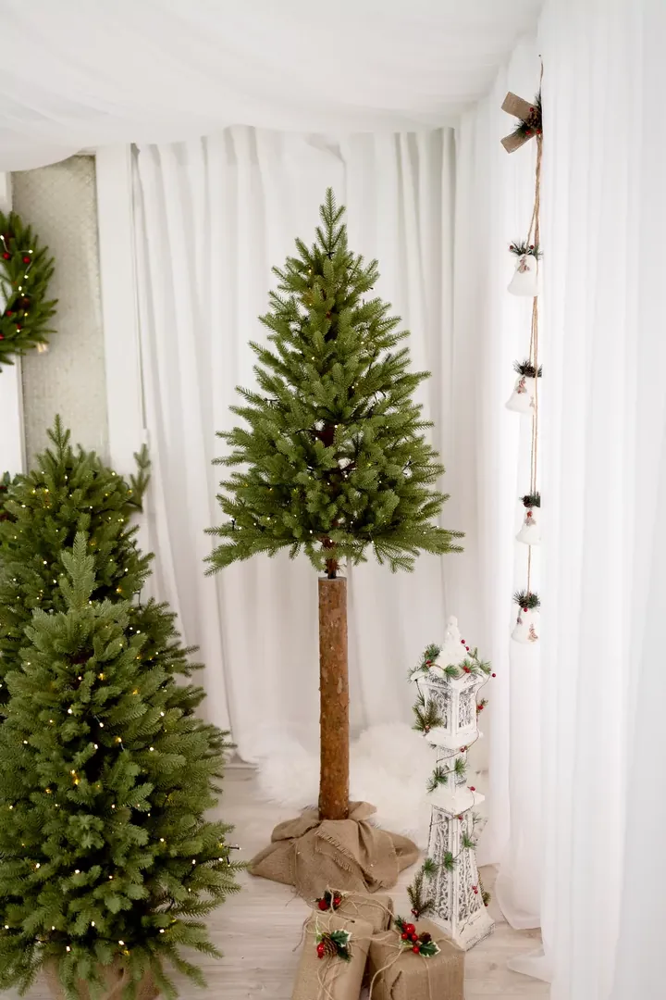
Choinki na pniuNaturalny pień i korona z PVC, PE lub hybrydowa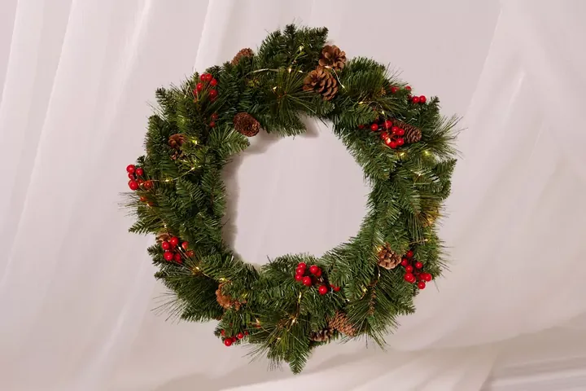
WiankiŚrednica 60 cm, od naturalnych po bogato zdobione GirlandyNa poręcze, kominki, witryny i stołyZamówienia detaliczne realizujemy w sklepie sztucznechoinki.com.pl. Przy zamówieniach w ilości hurtowej zapraszamy do działu sprzedaży.
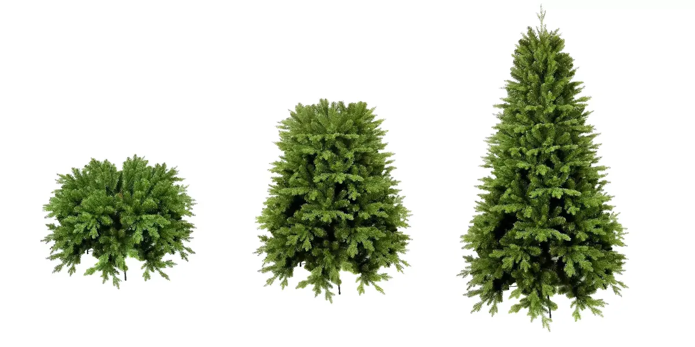
Jako pierwsi w Polsce wprowadziliśmy system samorozkładających się gałęzi. Wyjmujesz choinkę z pudełka, a po kilku sekundach gałęzie same opadają wzdłuż pnia, równo i bez wysiłku.
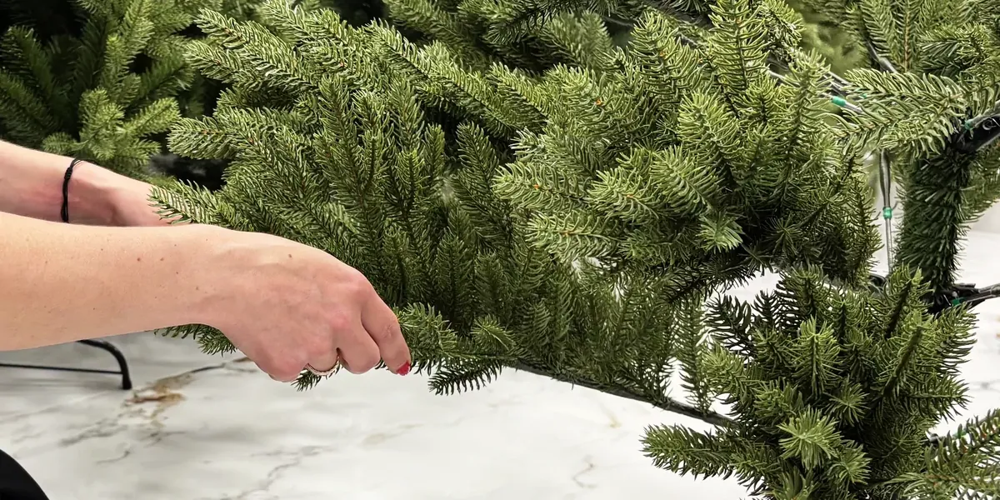
Kształt gałązek i rozmieszczenie igliwia odwzorowują naturalnie rosnące drzewka. Materiały dobieramy pod kątem trwałości, koloru i bezpieczeństwa dla całej rodziny.
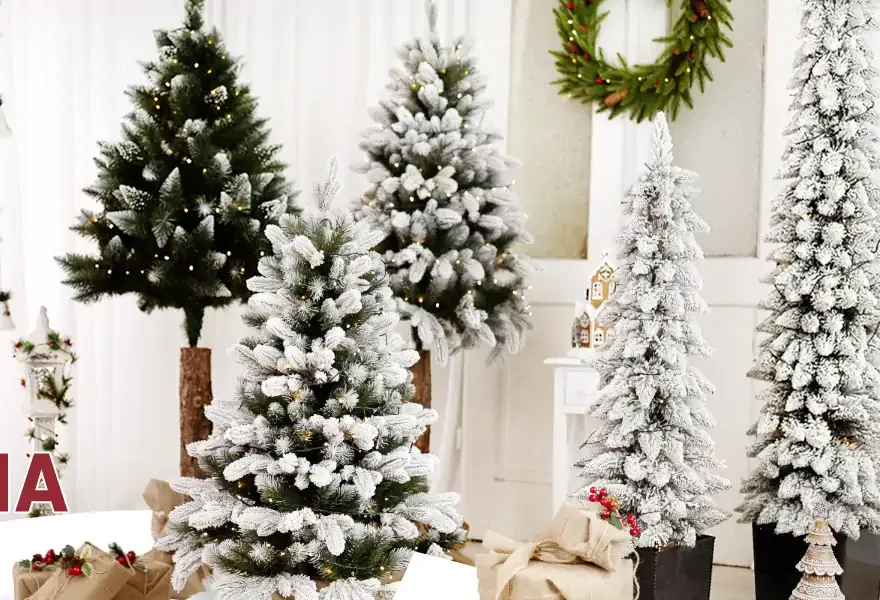
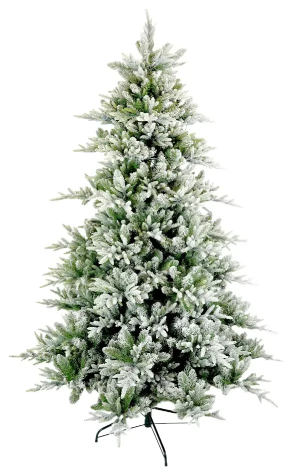
Zapraszamy do współpracy hurtowej sklepy, sieci handlowe i firmy z Polski i z zagranicy. Ofertę hurtową i indywidualne wyceny przygotowuje dział sprzedaży.

W Koziegłowach prezentujemy całą kolekcję. Na miejscu ocenisz strukturę igliwia i wykonanie, a zamówienie omówisz z doradcą.
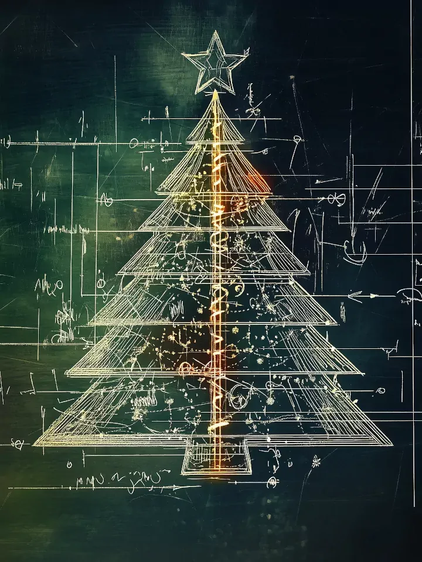
Według Twoich wzorów, szkiców lub opisu drzewa. Gotowy model staje się wyłączną własnością zamawiającego.
Organizujemy dostawy w Polsce, w Europie i dalej, z harmonogramem ustalonym przed sezonem.
Paulina PaśSales & Customer Service
Jesteśmy rodzinną firmą, która od ponad 20 lat produkuje sztuczne choinki i ozdoby świąteczne. Inspirują nas prawdziwe, leśne drzewka - ich kształt, odcienie zieleni i naturalny układ gałęzi.
Drugim źródłem pomysłów są rozmowy z klientami. Czy drzewko ma być smukłe, bo stoi w kącie małego mieszkania? A może wyjątkowo gęste, bo w domu są dzieci? Z takich pytań powstają kolejne modele.
Łączymy nowoczesne maszyny z ręczną pracą ludzi z doświadczeniem, żeby choinka wyglądała pięknie także po wielu latach i została z rodziną na dłużej.
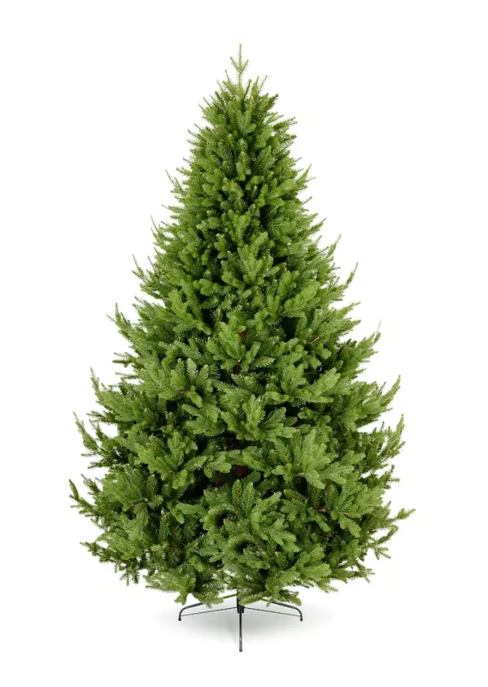
Zamówienie wysyłamy zwykle w ciągu 5 dni roboczych. Koszt dostawy zależy od taryfy przewoźnika i wagi choinki, dokładną kwotę zobaczysz przy składaniu zamówienia.
Masz 14 dni na zwrot, a każdą reklamację rozpatrujemy indywidualnie. Zasady opisuje regulamin sklepu.
| Produkt | Kurier | Za pobraniem |
|---|---|---|
| Choinki Premium 100% PE i PE+PVC | 60 zł | 80 zł |
| Choinki foliowe i na pniu | 20 zł | 25 zł |
| Wianki i girlandy | 20 zł | 25 zł |
PPHU „PSOMAR” Wojciech Psonka
Plac Moniuszki 8, 42-350 Koziegłowy
Poniedziałek - piątek, 8:00-16:00
Dział sprzedaży i obsługa klientaPaulina Paś
+48 535 222 069
paulinap.psomar@gmail.com